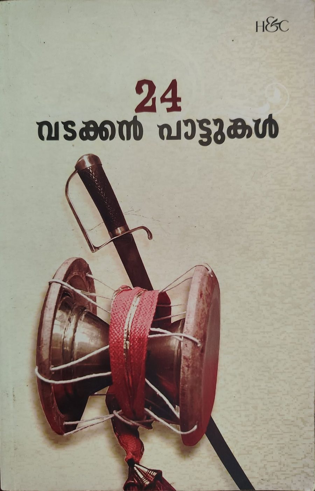
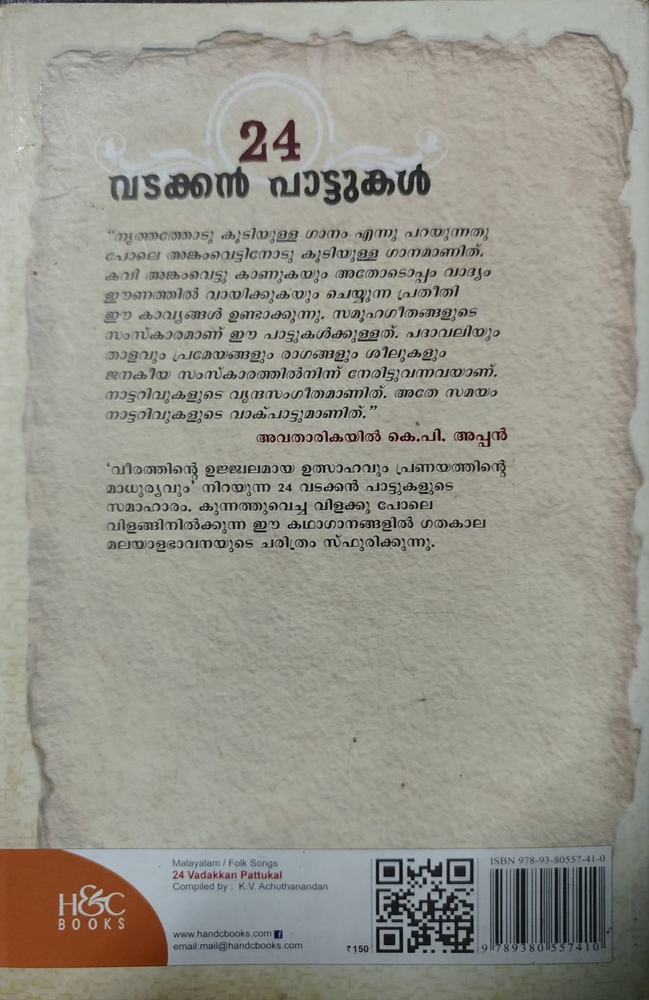
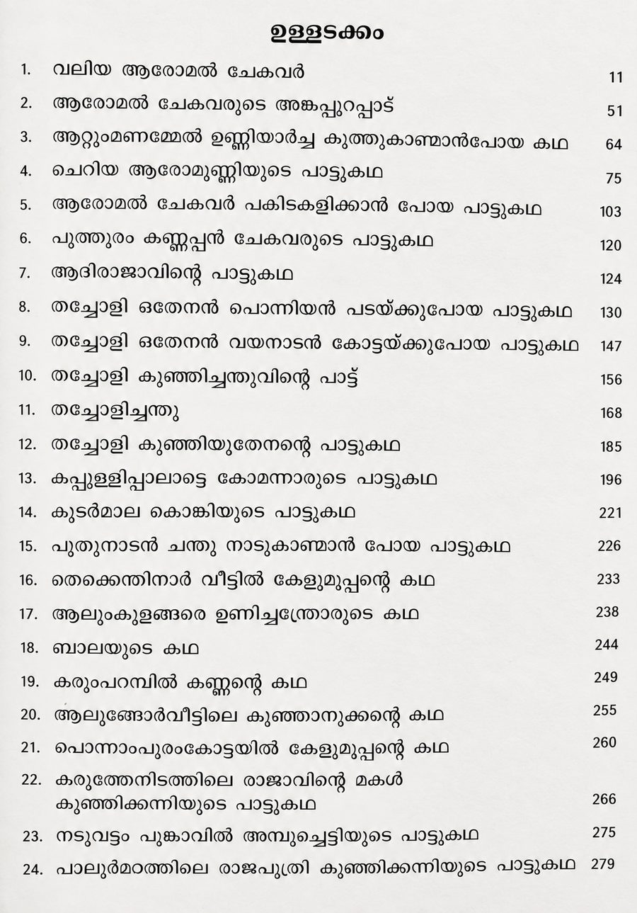

Author: സംശോധകൻ: കെ വി അച്ചുതാനന്ദൻ
Review by: സുരേഷ് ബാബു മണക്കടവ്
പ്രിയമുള്ളവരെ,
ശ്രീ കെ.വി. അച്യുതാനന്ദൻ സമാഹരിച്ച '24 വടക്കൻ പാട്ടുകൾ' എന്ന പുസ്തകമാണ് ഞാൻ ഇന്ന് നിങ്ങൾക്ക് പരിചയപ്പെടുത്തുന്നത്. ഇതിലെ മിക്ക കഥകളും നമുക്ക് വളരെ സുപരിചിതമാണ്. വാമൊഴിയായ പാട്ടുകളായും മുത്തശ്ശിക്കഥകളായും ഗാനങ്ങളായും സിനിമകളായും ഒക്കെ നമുക്ക് ഈ കഥകളും കഥാപാത്രങ്ങളും ഒക്കെ ഏറെ പരിചിതമാണ്.
വലിയ ആരോമൽ ചേകവർ, ആറ്റുമണമേൽ ഉണ്ണിയാർച്ച കൂത്തുകാൺമാൻ പോയ കഥ, തച്ചോളി ഒതേനൻ പൊന്നിയൻ പടയ്ക്ക് പോയ കഥ എന്നിങ്ങനെ 24 കാവ്യങ്ങളാണ് ഈ പുസ്തകത്തിൽ ഉള്ളത്. താളത്തിലും ഈണത്തിലും വായിച്ചു പോകാവുന്നവയാണ് ഈ പാട്ടുകൾ. ഇതിലെ പ്രധാന കഥാപാത്രങ്ങളെ പരിചയമില്ലാത്ത മലയാളികൾ ഉണ്ടാകില്ല. തച്ചോളി ഒതേനൻ, ആരോമൽ ചേകവർ, കണ്ണപ്പനുണ്ണി, ചന്തു തുടങ്ങിയവർ.
കേരളത്തിൽ വടക്കൻ പാട്ടുകളും തെക്കൻ പാട്ടുകളും ഉണ്ട്. എന്നാൽ വീരപാണ്ഡ്യ കട്ടബൊമ്മനെ പോലെയുള്ളവർ നായകരായ തെക്കൻ പാട്ടുകൾക്ക് വേണ്ടത്ര പ്രചാരം കിട്ടിയിട്ടില്ല. ഇതിന് കാരണം പ്രധാനമായി വടക്കൻ പാട്ടുകൾക്ക് സിനിമയിൽ ലഭിച്ച സ്വീകാര്യതയാണ്. ഒരു കാലത്ത് മലയാള സിനിമയെ എല്ലാത്തരത്തിലും സമ്പന്നമാക്കിയ ധാരാളം സിനിമകൾ വടക്കൻ പാട്ടുകളെ അവ ലംബിച്ചുണ്ടായി. അതിലെ ഗാനങ്ങളും പ്രസ്തുത കഥകളെ മനോഹരമാക്കുവാനും പൊലിപ്പിക്കുവാനും പോന്നവയായിരുന്നു.
വടക്കൻ പാട്ടുകളിലെ കഥാപാത്രങ്ങൾ കേവലം ഭാവനകളല്ല, ജീവിച്ചിരുന്നവർ തന്നെയാണ്. കാവ്യങ്ങളായപ്പോൾ അവയ്ക്ക് കൂടുതൽ പൊലിമയുണ്ടായി എന്ന് മാത്രം. ഏതാണ്ട് നാലോ അഞ്ചോ നൂറ്റാണ്ടുകൾക്ക് മുൻപാവണം അവർ ജീവിച്ചിരുന്നത്. എറെക്കുറെ ഒരു താലൂക്കിന്റെ വിസ്തീർണ്ണം മാത്രമുള്ള കടത്തുനാട്, കോലത്തുനാട് — ഇന്നത്തെ വടകര, തലശ്ശേരി തുടങ്ങിയ ഭാഗങ്ങൾ — എന്നിവിടങ്ങളാണ് ഈ കഥകളുടെ ഭൂമിക. ഇപ്പോഴും തച്ചോളി ഒതേനന്റെ ലോകനാർകാവ് ക്ഷേത്രം വടകരയിലുണ്ട്.
വടക്കൻ പാട്ടുകൾ വായിക്കുമ്പോൾ നമുക്ക് അന്നത്തെ സാമൂഹിക ജീവിതം, ജാതിവ്യവസ്ഥ, നാട്ടുഭരണക്രമം, ഭൂപ്രദേശത്തിന്റെ പ്രത്യേകതകൾ തുടങ്ങിയവ മനസ്സിലാകും. പുത്തൂരം വീട്, തച്ചോളി തറവാട് എന്നിവയാണ് ഇതിലെ പ്രധാന തറവാട്ടു വീടുകൾ.
വടക്കൻ പാട്ടുകളുടെ ഏറ്റവും പ്രധാന പ്രത്യേകതയായി തോന്നുന്ന കാര്യം, ഇത്രമേൽ പുരുഷ സൗന്ദര്യവർണ്ണന നടത്തിയ മറ്റൊരു കാവ്യം മലയാളത്തിൽ ഇല്ല എന്നതാണ്. സ്ത്രീ സൗന്ദര്യവർണ്ണനയേക്കാൾ ഒരു പടി മേലെ നിൽക്കും പുരുഷ സൗന്ദര്യവർണ്ണന. സിനിമാ ഗാനങ്ങളിൽ നമ്മൾ കേൾക്കുന്ന "കാരിരുളൊത്ത മുടിയഴകും ശംഖ് കടഞ്ഞ കഴുത്തഴകും ആലിലയ്ക്കൊത്ത അടിവയറും മാറത്തു മാമ്പുള്ളിപ്പോർച്ചുണങ്ങും" തുടങ്ങിയ വരികളെല്ലാം ചെറിയ ചെറിയ മാറ്റങ്ങളോടെ കാവ്യത്തിൽ നിന്നും കടമെടുത്തവയാണ്.
വീരവും ശൃംഗാരവുമാണ് ഇതിലെ പ്രധാന രസങ്ങൾ. കീഴടങ്ങുന്നതിനേക്കാൾ പൊരുതി മരിക്കാൻ ഇഷ്ടപ്പെടുന്നവരായിരുന്നു ഈ കാവ്യങ്ങളിലെ നായകൻമാർ. പുതിയ കാലത്തിന് രസകരമായ ചില കാര്യങ്ങൾ ഇതിൽ കാണാം. കഞ്ചാവ് വലിക്കുന്നത് അന്ന് അംഗീകൃതമായ കാലമായിരുന്നു അത്. മകൾ അച്ഛന് കഞ്ചാവ് വലിക്കാൻ തയ്യാറാക്കി നൽകുന്നതൊക്കെ കാവ്യങ്ങളിലുണ്ട്.
അതുപോലെ സ്ത്രീ-പുരുഷ ബന്ധങ്ങൾ; ഒരു നായക കഥാപാത്രം മറ്റൊരു ബന്ധുവീട്ടിൽ അതിഥിയായി ചെല്ലുമ്പോൾ രാത്രിയിൽ ആകാശം നോക്കുമ്പോൾ വെറുതെ ഗ്രഹനില നോക്കുന്നു. അയാൾക്ക് ഒരു കീർത്തിമാനായ പുത്രൻ പിറക്കേണ്ട സമയമാണതെന്ന് മനസ്സിലാക്കി ആ വീട്ടിലെ പെൺകുട്ടിയോട് — മുറപ്പെണ്ണ് തന്നെയാണ് അത് — കാര്യം പറഞ്ഞു മനസ്സിലാക്കി സമ്മതത്തോടെ പ്രാപിക്കുന്നതൊക്കെ ഈ പാട്ടിൽ വരുന്നുണ്ട്.
പരിഹരിക്കാൻ ആവാത്ത പ്രശ്നങ്ങൾ അന്ന് പറഞ്ഞു തീർത്തിരുന്നത് അങ്കത്തിലൂടെയായിരുന്നു. മൂപ്പിളമ തർക്കം പോലെയുള്ള കാര്യങ്ങളൊക്കെ കൊണ്ടാണ് അന്ന് അങ്കം നടന്നിരുന്നത്.
വടക്കൻ വീരഗാഥയിലൊക്കെ പരാമർശിക്കപ്പെടുന്ന കഥ വലിയ ആരോമൽ ചേകവരുടെ കഥയുമായി ബന്ധപ്പെട്ട ഒരു ഭാഷ്യമാണ്. ഒരു മൂപ്പിളമ തർക്കത്തിന്റെ ഭാഗമായാണ് ആരോമൽ ചേകവരും അരിങ്ങോടരും തമ്മിൽ അങ്കം നടക്കുന്നത് — ആരാണ് മൂത്തത്, ആരാണ് ഇളയത് എന്ന് തീരുമാനിക്കുന്നതിനായി. അമ്മാവന്റെ ശേഷക്രിയയ്ക്കായി അസ്ഥി പൊറുക്കാൻ ഇറങ്ങിയപ്പോഴാണ് ആരാണ് മൂത്തത് എന്ന കാര്യത്തിൽ ഉണ്ണിക്കോനാരും ഉണ്ണിച്ചന്ദ്രോരും തമ്മിൽ തർക്കമായത്. രണ്ടുപേരും ചേട്ടത്തി അനിയത്തി മക്കളാണ്. അമ്മമാരെ വിളിച്ച് അന്വേഷിച്ചപ്പോൾ പേറ്റുനോവ് കൊണ്ട് ആരാണ് ആദ്യം പ്രസവിച്ചത് എന്ന് ഓർക്കുന്നില്ല എന്ന് മറുപടി. പിന്നെ വയറ്റാട്ടിയെ വിളിച്ചു; പാതിരായ്ക്ക് പെറ്റത് ഉണ്ണിക്കോനാരും പുലർച്ചെ പെറ്റത് ഉണ്ണിച്ചന്ദ്രോരുമെന്നും മറുപടി. പക്ഷേ ഉണ്ണിച്ചന്ദ്രോർ അത് അംഗീകരിക്കുന്നില്ല. തുടർന്ന് തുന്നിയലക്കുന്ന മണ്ണാത്തിയെ വിളിച്ചു; ഉണ്ണിക്കോനാർ മൂവന്തിക്ക് ജനിച്ചുവെന്നും പാതിരായ്ക്ക് ജനിച്ചത് ഉണ്ണിച്ചന്ദ്രോരാണെന്നും മറുപടി. അതും ഉണ്ണിച്ചന്ദ്രോർ അംഗീകരിച്ചില്ല.
പിന്നീട് അമ്പലനടയിൽ സ്വർണ്ണവും വെള്ളിയും വെച്ച് പരീക്ഷിക്കുന്നു. സ്വർണ്ണം കിട്ടിയ ഉണ്ണിക്കോനാരെ മൂത്താളായി അംഗീകരിക്കാൻ ഉണ്ണിച്ചന്ദ്രോർ തയ്യാറായില്ല. തുടർന്ന് അങ്കത്തിലൂടെ കാര്യങ്ങൾ തീരുമാനിക്കാൻ നാടുവാഴിയുടെ മധ്യസ്ഥതയിൽ തീരുമാനിച്ചു. ഉണ്ണിക്കോനാർ ആരോമൽ ചേകവരെയും, ഉണ്ണിച്ചന്ദ്രോർ അരിങ്ങോടരെയും ചേകവൻമാരായി തീരുമാനിക്കുന്നു.
ആരോമൽ ചേകവർ അങ്കം കുറിക്കുമ്പോൾ സ്വന്തം വീട്ടിൽ വികാരനിർഭരമായ രംഗങ്ങളാണ് ഉണ്ടായത്. അച്ഛനും അമ്മയും സഹോദരനും പൊട്ടിക്കരയുന്നുണ്ട്. ആ അങ്കം മുടക്കുവാനായി വന്ന വീരാംഗനയെന്ന് വിശേഷിപ്പിക്കപ്പെടുന്ന ഉണ്ണിയാർച്ച പോലും അലമുറയിട്ട് കരയുകയും ബോധംകെട്ട് വീഴുകയും ചെയ്യുന്നുണ്ട്. ആരോമൽ ചേകവർ പോലും കരയുന്ന രംഗങ്ങൾ ഇതിലുണ്ട്. പക്ഷേ അഭിമാനിയായ ആരോമൽ അങ്കത്തിൽ നിന്നും പിന്മാറുന്നില്ല. തുടർന്ന് നമ്മളൊക്കെ കേട്ടിട്ടുള്ളതുപോലെ അങ്കം നടക്കുന്നു. ചന്തുവിന്റെ ചതിയാൽ മുറിവേറ്റ് ആരോമൽ അങ്കത്തിന് ശേഷം വീട്ടിലെത്തി കച്ചയഴിച്ച് മരിച്ചുവീഴുകയാണ്.
വളരെ രസകരവും പാരായണക്ഷമവുമാണ് ഇതിലെ കാവ്യങ്ങളെല്ലാം തന്നെ. ആയതിനാൽ തന്നെ തീർച്ചയായും ഏവരും വായിച്ചിരിക്കേണ്ട നമ്മുടെ പഴയകാല പുസ്തകങ്ങളിൽ ഒന്നായി ഈ പുസ്തകത്തെ ഞാൻ തീർച്ചയായും നിർദ്ദേശിക്കുകയാണ്. എല്ലാവരും തന്നെ തങ്ങളുടെ വായനയുടെ പരിധികളിൽ ഇത്തരത്തിലുള്ള പുസ്തകങ്ങളെയും കൂടി ഉൾപ്പെടുത്തണം എന്ന് സൂചിപ്പിച്ചുകൊണ്ട് നിർത്തുന്നു.
നന്ദി, നമസ്കാരം.